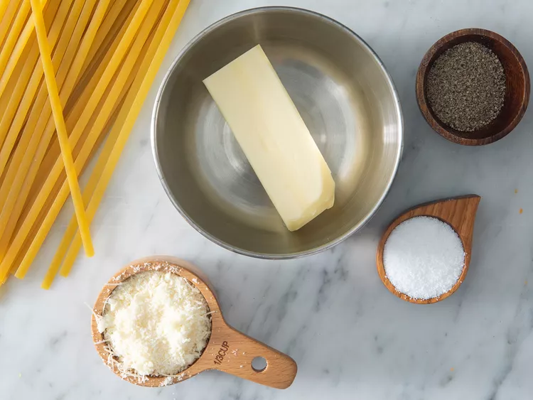

Buttered Noodles
This recipe for Buttered Noodles is sure to satisfy and picky toddlers in you home, guaranteed!
It is recommended to use only the freshest ingredients available to you.
Ingredients
- 1 (16 ounce) package fettuccine noodles
- 6 tablespoons butter, cut into pieces
- ⅓ cup grated Parmesan cheese
- salt and ground black pepper to taste
Steps
- Step 1: Gather all ingredients.

PHOTO: DOTDASH MEREDITH FOOD STUDIOS
- Step 2 Fill a large pot with lightly salted water and bring to a rolling boil.
- Step 3 Stir in fettuccine, bring back to a boil, and cook pasta over medium heat until tender yet firm to the bite, 8 to 10 minutes.

PHOTO: DOTDASH MEREDITH FOOD STUDIOS
- Step 4 Drain and return pasta to pot. Mix butter, Parmesan cheese, salt, and pepper into pasta until evenly combined.
- Step 5 Serve hot and enjoy!

PHOTO: DOTDASH MEREDITH FOOD STUDIOS
Return to top
Return to main page